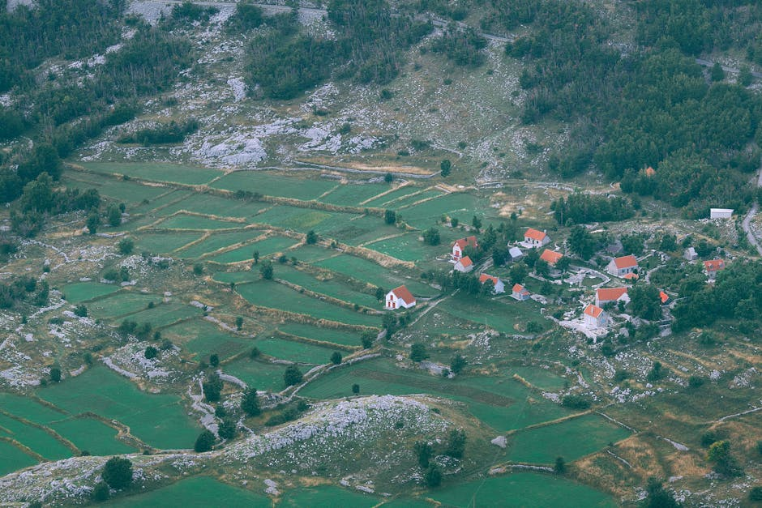

Open source AI Pest Control for smallholder Cotton Farmers in India

Wadhwani AI has developed a mobile app to support cotton farmers combat pest infestations, a major threat to cotton productivity. For this, they have collaborated with FAIR Forward – AI for All, a project of German Development Cooperation. The app allows farmers to take photos of pheromone traps, which capture male bollworms, and uses an AI model to count the pests in the images. Based on the AI-generated counts, the app provides recommendations to farmers on how to respond. This technology empowers small-scale farmers to make informed decisions, reduce uncertainty in yield, and improve their livelihoods.
As the codebase, dataset and research are openly available it can be used to build on, test and research similar applications in other contexts. This would esp. apply to problems of identification and counting of agricultural pests.
Data characteristics
Wadhwani AI with support from German Development Cooperation provided training data consisting of ca. 13,000 images:
(a) These images were captured by farmers and farm extension workers since 2018
(b) The dataset contains two types of images: those with pests and bounding boxes labelling either pink bollworm (PBW) or American bollworm (ABW), and those without pests, representing real-world user behavior.
(c) License: Apache 2.0
Model characteristics
Wadhwani AI with support from German Development cooperation provided the codebase of the pest identification model:
(a) At its core, this repository packages an object detection implementation.
(b) While there are several object detection implementations, and even implementation aggregations, there are none that completely solve for the challenges faced here (e.g., highly diverse image quality, model size restrictions)
(c) License: Apache 2.0
How to use
The resources can be used to build on, test and research similar applications in other contexts, esp. applying to problems of identification and counting of agricultural pests.
This use case also included the development of a business model and funding model for open source AI as a stepping stone towards financially viable operations. It was facilitated by Villgro Africa's and FAIR Forward's six-month mentorship programme on "Creating sustainable business and funding models with open source AI". See: https://www.bmz-digital.global/en/news/open-source-ai-business-impact/
Datasets
Use cases
Additional resources
About
Powered by / Provided by: Wadhwani AI
Catalyzed by: FAIR Forward - AI for All (https://www.bmz-digital.global/en/overview-of-initiatives/fair-forward/), GIZ
Financed by: BMZ (https://www.bmz-digital.global/en/digital-transformation-and-development-cooperation/)
Authors: JP Tripathi, Philipp Olbrich
Contact: Wadhwani AI (agri-ai@wadhwaniai.org), Github (https://github.com/WadhwaniAI/pest-monitoring)